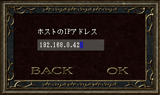
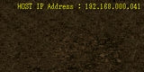
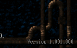

| - オンラインモードの始め方 - |
| |
シャドウフレアはオンラインで最大4人まで一緒にプレイすることができます。
つまり、他の人と一緒にミッションをクリアしたり、レベルを上げたりすることができます。 |
| |
|
オンラインで複数の人と一緒にプレイするときは、
ゲームモードの選択ウィンドウで ONLINE MODE を選択してください。 |
|
|
オンラインでプレイするためには「ホスト」と呼ばれる"親"が一人必要になります。
そして「クライアント」と呼ばれる"子"がホストに接続することによって
一緒にプレイすることが出来るようになります。
ホストは必ず一人ですが、クライアントは最大で3人までホストに接続することが出来ます。
オンラインでプレイする場合には事前に誰がホストになって
誰がクライアントになるかを決めておいてください。
また、ホストになった人はクライアントの人に自分のIPアドレスを知らせてください。
尚、ホストは高性能なパソコンを持っている人がなることをお勧めいたします。 |
|
| このウィンドウで自分がホストになるかクライアントになるかを選択します。 |
|
| NEW GAME |
自分がホストになる場合に選択してください。
ここを選択するとロード画面の後、ゲームが開始されます。
ゲーム開始と同時に、クライアントの接続を受け付けます。 |
| DIVE GAME |
自分がクライアントになる場合に選択してください。 |
| BACK |
ゲームモード選択ウィンドウに戻ります。 |
|
| |
|  |
ホストから教えてもらったホストのIPアドレスを半角数字とピリオドを使って入力してください。
クリップボードにIPアドレスをコピーしてある場合は、
入力エリアの右側のボタンを押すことによってIPアドレスを貼り付けることもできます。
入力を終えた後、「OK」をクリックしてください。
ロード画面の後、ゲームが始まります。
ロード画面が表示された後、エラーが表示されてタイトル画面に戻ってしまった場合は、
・ネットワークに接続しているか (インターネット等)
・入力したIPアドレスが合っているか
・半角数字と半角ピリオドで入力しているか
・ホストのシャドウフレアのバージョンと一致しているか
を確認してください。それでもエラーが発生する場合はネットワーク上の問題が発生していることが考えられます。
|
|
| |
| IPアドレスの確認方法 |
ホストのIPアドレスは、ホストのゲーム開始直後に画面右上に表示されます。
また、ゲーム中にESCキーを押してゲーム設定メニューを表示させることによってもIPアドレスを確認することが出来ます。
※ホストが複数のIPアドレスを持っている場合は正しいIPアドレスを認識できない場合があります。 |
 |
|
| |
| シャドウフレアのバージョンの確認方法 |
シャドウフレアのバージョンは、ゲームを起動した後のタイトル画面右下に表示されています。
一桁、三桁、三桁の数字で表記しています。 |
 |
|